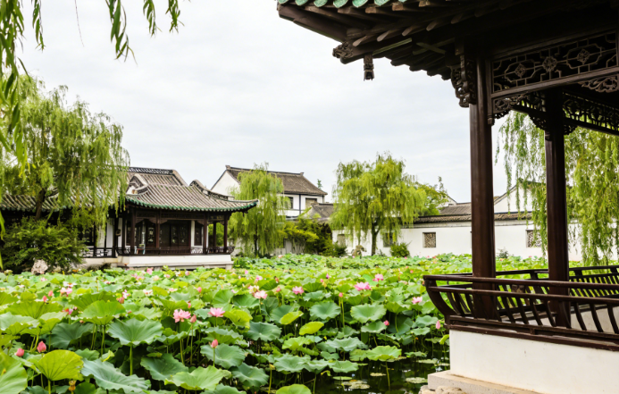
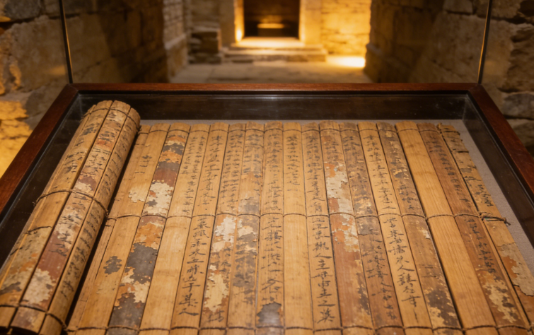
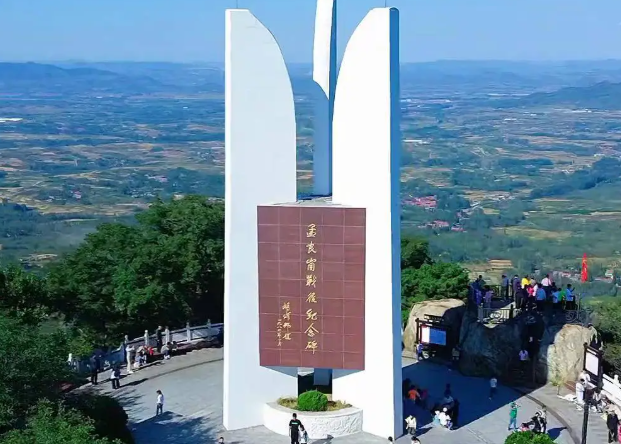

Linyi is the birthplace of Wang Xizhi, the legendary "Sage of Calligraphy" (303-361 AD). The Former Residence of Wang Xizhi showcases traditional Chinese garden architecture with lotus ponds, ancient pavilions, and stone tablets inscribed with his masterful calligraphy. The nearby Yinque Mountain Han Tombs house the famous bamboo slips of "Sun Tzu's Art of War," revolutionizing our understanding of ancient Chinese military philosophy and offering a window into China's brilliant past.
The Menglianggu Battle Memorial commemorates the decisive campaign of 1947, one of the most significant battles during the Chinese Civil War. The site features a grand memorial hall, imposing monuments, and detailed exhibits documenting the heroism of the soldiers and the Yimeng people. The Yimeng Revolutionary Base Area stands as a testament to the unwavering devotion and spirit of the local people who supported the revolution with everything they had.
The Yi River, the mother river of Linyi, winds gracefully through the city offering breathtaking scenery. The Yi River Scenic Area features riverside parks, ancient bridges, and the famous "Yi River Night View." Tianma Island offers panoramic views of limestone cliffs, emerald lakes, and lush forests with ancient rock carvings and Buddhist temples. The Zhuge Liang Cultural Park in Yinan County celebrates the legendary strategist born in Linyi, featuring grand statues and beautifully landscaped Three Kingdoms-era gardens.

A pilgrimage site for calligraphy enthusiasts, showcasing lotus ponds, ancient pavilions, and inscribed stone tablets of the greatest calligrapher in Chinese history. The residence preserves the elegant architectural style of the Jin Dynasty, with meticulously restored gardens that transport visitors back to an era when the art of brush and ink reached its pinnacle.

Archaeological treasure trove housing the famous Han Dynasty bamboo slips of "Sun Tzu's Art of War," with thousands of ancient artifacts on display. The discovery of these bamboo slips in 1972 revolutionized our understanding of ancient Chinese military philosophy and provided invaluable insights into the intellectual achievements of the Han Dynasty.

Grand memorial hall and monuments commemorating the decisive 1947 campaign, with exhibits documenting the heroism of soldiers and the Yimeng people. The memorial stands as a powerful reminder of the sacrifices made during the Chinese Civil War and serves as an important educational site for understanding China's revolutionary history.